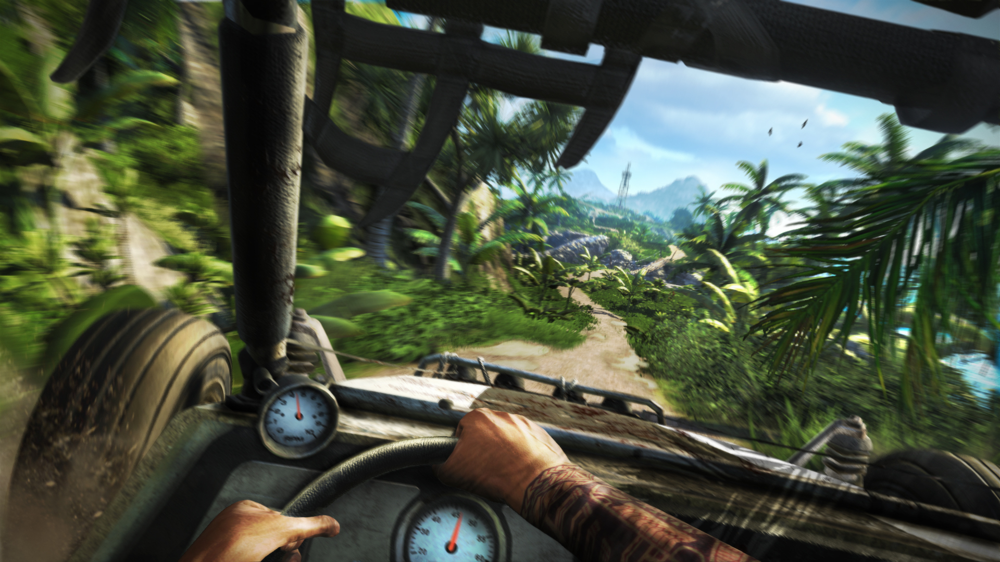

Far Cry 3 is an action adventure, first person shooter game that has also been developed by Ubisoft Montreal and is published by Ubisoft, a French multinational video game publishers. In a tropical island between Indian and Pacific Ocean Pirates have kidnapped some of Jason’s friends. He has to left no stone unturned in order to save his friends.
Far Cry 3 game has some role playing characteristics as well. The player can hide behind different object in order to keep himself out of enemy’s sight. Melee attacks have been enabled in this game which mean the player can silently take down his enemies. The story board map of this game has been increased 10 times compared to its predecessors. Player can take a good look of the field where he needs to attack and can take a survey of it. Then he can also plan the attack that how should he go into the firing range in such a way that he can achieve his targets.

To download Far Cry 3 Click HERE